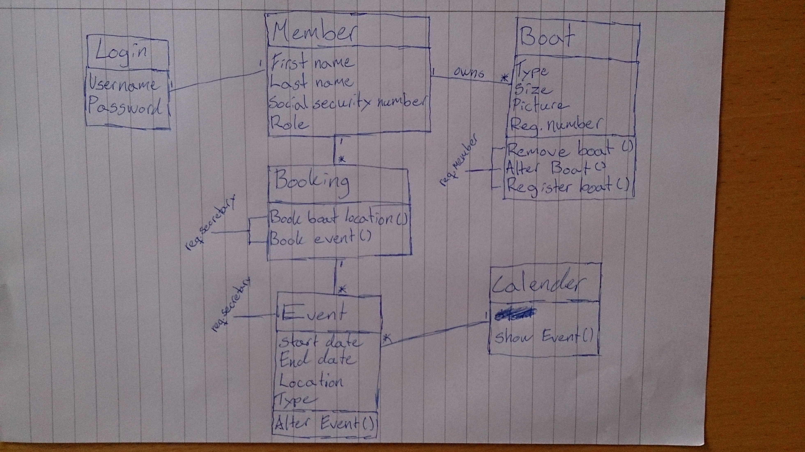

Första modellen som gjordes
Så som jag har tänkt med denna modell är att på medlemsklassen så har jag roll med som ett attribut för att skilja på de som är vanliga medlemmar och de som har lite mera ansvar i klubben som sekreterare som kan regristrera händelser till exempel. Alla medlemmar kan bara ha ett inlogg och de kan regristrera hur många båtar som helst. I båt klassen har jag även lagt metoder som tillhör båten som en medlem kan göra det vill säga registrera nya båtar, ta bort båtar och ändra befentliga båtar. I bokningsklassen har jag gjort så att de attribut som ligger där i är metoder som gör lite olika saker, till exempel boka händelse som bara en sekreterare kan göra och så vidare. Vid sidan av bokning så står det vad de olika metoderna kräver för att kunna fungera som till exempel boka en händelse så måste man vara sekreterare. Händelse klassen har jag kopplat till bokning då det finns ett attribut i bokning som heter book event och då tyckte jag att de skulle vara kopplade till varandra men det är bara sekreteraren som kan boka händelser. Kalender klassen har bara ett attribut och den är att visa händelser som sker i klubben däreför är det bara ett attribut som ska visar alla händelser och den har då alla attribut som Event klassen har.
We have done a peer review of your workshop 1 and here comes our feedback: As a developer the model helps but you don’t really know what the role that is linked to member has for meaning in the organisation but other than that it helps and it’s good associations. As a secretary you get a good understanding on how the organisation works and how the system is going to work. The only thing that you don’t know as a secretary is who is booking the ParkingLot for the boats. The strong points of the model is that they have a Size class that boat and ParkingLot inherit from and it is really good that Event and Calendar are for them self with only association to each other. The only thing that we have to complain about is the naming on ParkingLot because when you first see it you think it’s about cars and not a parking for boats. The model has passed the grade 3 criteria.
We have done a peer review of your workshop 1 and here comes our feedback: The Berth class in our mind is not necessary to have to understand the organisation but it’s not wrong to have it. A member do not need to participates in an event, it only needs to look at the events that is coming up in the calendar so in our mind you don’t need to have an association from member to event. The naming on the Berth class should we name dock instead because it’s easier to understand otherwise it was good naming on the classes and attributes. As a developer we need to know more how the system should work for example, if you can register boats and who can book the boat locations and such. As a secretary you would understand how the organisation works with the members having boats and they are placed at the boat locations. The downside is that the secretary doesn’t know how the members are getting the boat locations and who is booking that. The strong points of the model is that it’s easy to understand and the naming on the attributes are good. Overall it’s a good model and have passed the grade 3 criteria.
1. There are no association names. Try putting in some; this will make the whole model more readable. 2. We don’t understand what the domain model shows. For example: member is connected to boat. We don’t know why and there is no obvious connection between them. We don’t know what’s happening between these two classes. You tried to explain this by adding some attributes and operations inside the boat class, but it would be much more readable if you used association names instead. 3. The main problem for the boat club was boat registration and berth assignment. This is unfortunately not inside your model. 4. What do you mean by “Booking”? We’re not sure what it does or what does it do. “Booking” could be an association instead of a separate class. 5. Look at the classes “Login”, “Event” and “Calendar”. Do you really need them? The main problem for boat club was boat registration and berth assignment. Authentication will not be a big problem during implementation and calendar/events were not main issue for the boat club. If you would improve the points we listed, we think you would pass for grade 3. Good luck!
1 – Rätt användning av attributionerna.
2 - Alla krävande attributionerna finns i modellen.
3 - Klasserna förbindas rätt med varandra.
4 - Alla krävande klasser finns i modellen.
5 - Inte för många eller för lite detaljer i modellen.
6 - Rätt användning av klasserna.
Det finns dock några punkter var modellen kan förbättras på:1 - Använd text med en ”association” som ”books”, ”assigns”, ”owns” och så vidare så att det blir tydligare vad en ”association” innehåller.
2 - Försök inte att krossa linjerna med så många associationerna.
3 - Några detailjer (tex. attributionerna) är svårt att läsa och bort strukit. Gärna undviker detta.
En små tips för er är att använda ett fritt online UML modellering program eller nåt liknade så att er modell ser mer professionell ut. Särskilt er första bilden kunde omstruktureras på olika platser så det inte kommer att liknar ett webb av kaos. Men detta borde inte var ett stor problem inför betyg 3. Också försök att skapa ett test modell först, var er kan fritt sudda bort och snabbt skriv ner alla detaljer. Sedan skapa er modell på nytt på papper utan att styrka bort detailjer och använda ett tydlig läsbar stil för text (jag kan för exempel inte läsa vilken attribut klassen ”Delete Boat” har). Konklusion: Beträffande modellen själv är jag säkert att ni kan få betyg 3. Det borde dock vara bättre att det ser om er modell är digital så det kommer att ser snyggare är och därmed mer professionell och strukturerad.Efter en att vi fått peer reviewsen så har vi ändrat modellen till bilden här ovanför